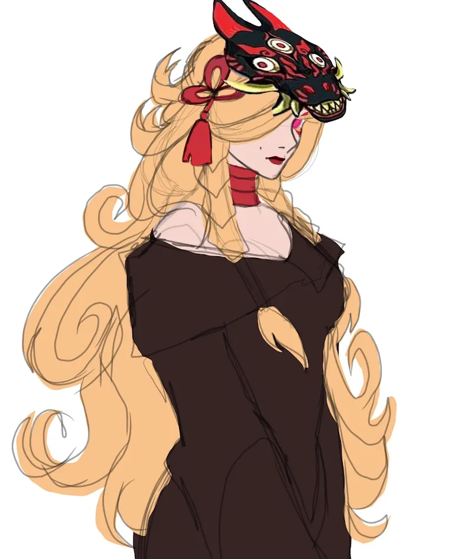
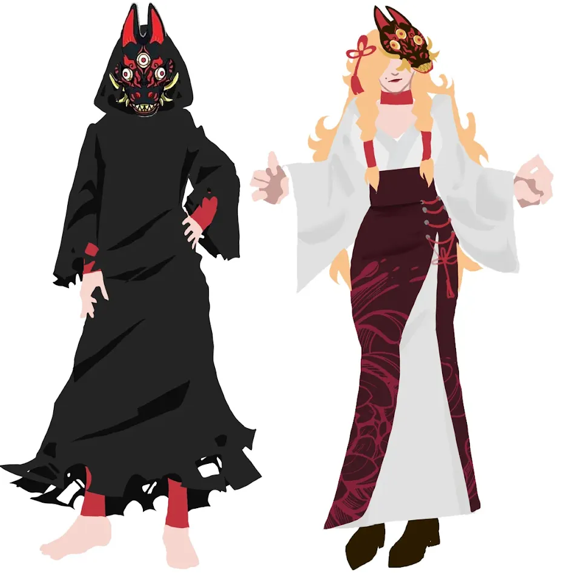

Desenvolvimento de desing de personagem
De uma olhada de perto
minhas ideias envolviam bem mais cores escuras no desing original

Nas primeiras versões a Takeshi estaria sozinha, mas a ideia de uma outra mulher como maldição na mascara fisgou minha atenção bem mais!